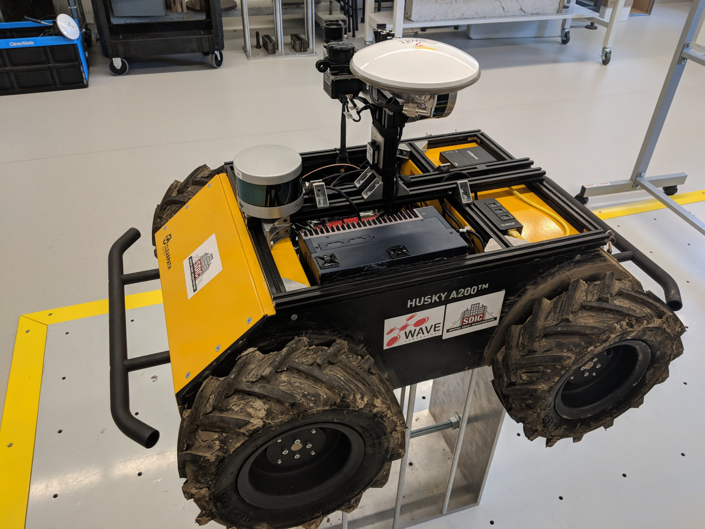
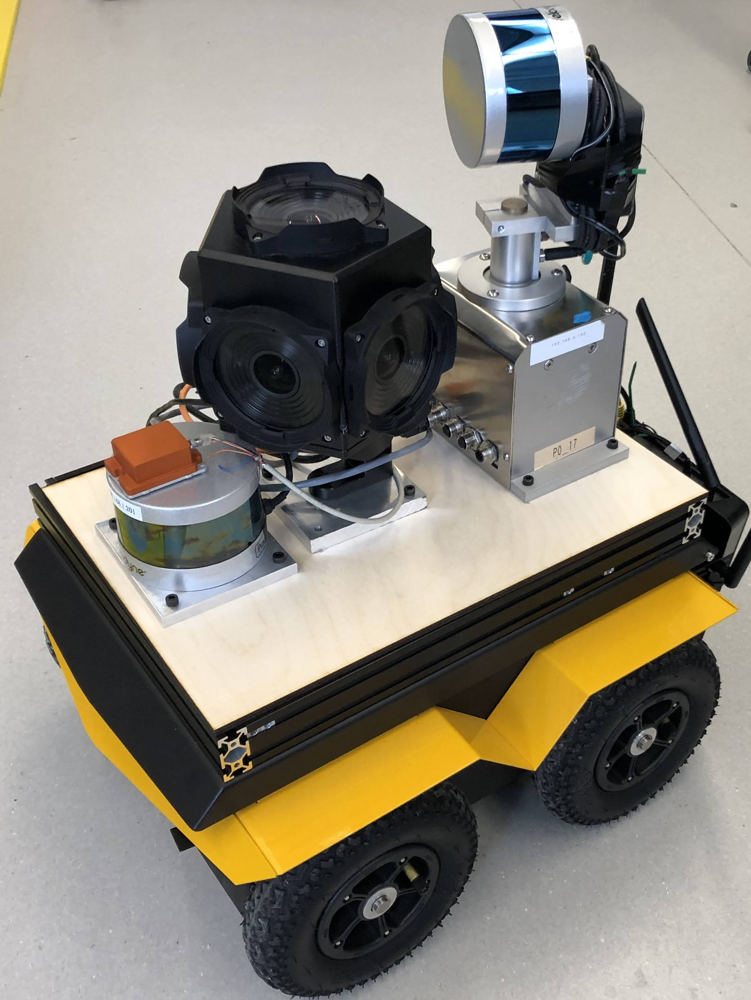
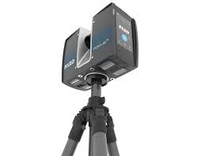

Beam Robotics | Map Viewer
Welcome to our online map viewer! Here you will find interacting maps of
pervious scans performed by Beam as well as some of our open source datasets.
Platforms
We have four scanning platforms:
4. Inspector Gadget Handle (IG Handle) : IG Handle is designed to be both a mobile hand scanning platform as well as capable of mounting onto a ground robot for autonomous scanning. todo: ad all sensors here We have released data collected from the IG Handle
1. Inspector Gadget (IG) : IG is more focused on inspection. For localization, IG relies on a horizontal VLP16 lidar, IMU, and Fisheye SLAM camera. For mapping and inspection, IG uses the upper sensor system which includes a vertical VLP16 lidar, one high resolution camera for detecting defects, one fisheye camera for map colourization, and one infrared camera for detecting subsurface defects or any temperature gradients.
2. Robot Eng (RobEn) : RobEn is more focused on rapid mapping and full coverage. For localization, RobEn has a horizontal VLP16 lidar, IMU, and Ladybug5+ spherical camera. For mapping, RobEn uses a vertically mounted rotating VLP16 which gets full 360 degree coverage once every second, and the spherical Ladybug5+ camera which gets full coverage at a high rate.
3. Faro Focus : We also have access to a more traditional tripod based laser scanner (often referred to as Terrestrial Laser Scanners). This is the current go-to solution for most land-based laser scanning. These scans are very time consuming and manual data-processing is required after collecting the scans to generate the final maps.



